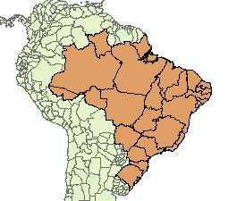
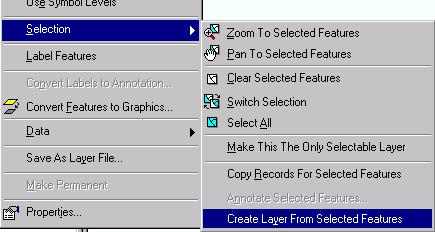
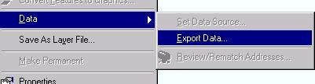
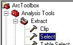
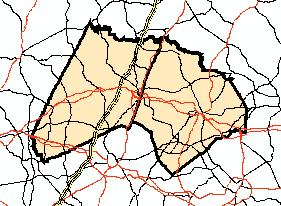
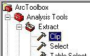

GIS
ArcGIS: Making Layers Smaller
Working with a portion of an ArcGIS layer
Examples:
- a layer that covers the entire United States, but you are only dealing with the 48 contiguous states
- a layer of first-level administrative boundaries (provinces, states, etc.) that covers the world (such a layer is included in the ESRI Data & Maps product), but you're only interested one country's provinces
- a layer (such as roads or rivers) that covers a state, but you're only interested in the part that falls within certain counties
There are several techniques to view only the features you need, or to save only those features as a new layer.
The screenshots below are from ArcGIS 9.1. The details may vary slightly in newer versions.
1. Using attribute values to define which features to view
Sometimes you've obtained a large layer but want to work with only a portion of it.
The Table of Contents stays the same (but you can always change the display name of a layer).
Steps:
- Open the layer's attributes (right-click layer name, Open Attribute Table) to familiarize yourself with the attribute names and values
- Open Layer Properties (right-click layer name and then Properties, or double-click layer name)
- Choose the Definition Query tab
- Use the Query Builder to build a SQL expression using attribute names and values. The "Get Unique Values" button may be helpful.
- After doing this, only those features that meet your seach criteria will be displayed
Bookmark: The "Full Extent" tool or "Zoom to Layer" option will still go to the entire original layer, even though you can't see some of it. If you zoom in to your area of interest, you may want to create a bookmark to memorize that particular zoom-in view so you can easily come back to it (View ... Bookmarks ... Create). Your created bookmarks will be listed for you to choose if you choose View .. Bookmarks.
2. Create layer from selected features
This creates a new layer displayed in your Table of Contents (but the underlying original file isn't changed).
Steps:
- Select the features you want to deal with (use any of the many selection methods, such as using the Select Feature tool, Select by Attributes, Select by Location)
- Then right-click the layer name, Selection ... Create Layer from Selected Features
- A new layer shows up in your Table of contents. You can turn off or remove the original layer, but it's still being referred to by the new virtual layer.
Bookmark: The "Full Extent" tool or "Zoom to Layer" option will still go to the entire original layer (not the new virtual layer), even if you make it non-visible. If you zoom in to your area of interest, you may want to create a bookmark to memorize that particular zoom-in view so you can easily come back to it (View ... Bookmarks ... Create). Your created bookmarks will be listed for you to choose if you choose View .. Bookmarks.
Save as Layer File: You can save the symbolization based on attributes (e.g., differerent symbols for different classes of road) if you right-click the layer name and choose "Save as Layer File" (.lyr extension). You will get just the selected features and their attributes, but a .lyr file refers to (and must be used in conjunction with) the original layer. The data frame extent will still be defined as the size of the original layer and will need to be re-defined if you want to use "Full Extent" or "Zoom to Layer." See no. 3, below.
3. Create a new feature class (e.g., Shapefile) from selected features
This creates a new Shapefile that is independent of the original layer.
Steps:
- Select the features you want to deal with (use any of the many selection methods, such as using the Select Feature tool, Select by Attributes, Select by Location)
- Then right-click the layer name, Data ... Export Data. You will probably want to use the coordinate system of the layer's source data if you're a novice.
- You can turn off or remove the original layer. The new layer can be opened by itself in another Map Document.
Toolbox: You can also do this using a Tool in the Toolbox: Open the ArcGIS Toolbox ; Search for Select, or go to Analysis Tools ... Extract ... Select . See online help.
4. Clip: Create a new Shapefile using another layer as a "cookie-cutter"
 This is useful if what you want in one layer is what is inside another layer, and a common use is to clip line layers in which individual features lie outside the boundaries of the area you're interested in.Examples:
-
- Water features or transportation layers that cover a state, but you only want them to display within a particular metropolitan area
- Water features or transportation layers that cover a country, but you only want them to display within a particular state(s)
- Administrative boundaries that cover the entire world, which you can clip using the national boundary of a single country or layer of a group of countries.
This creates a new Shapefile that is independent of the original layer.
 Steps:
- Open the ArcGIS Toolbox.
- Search for Clip, or go to Analysis Tools ... Extract ... Clip.
- The Input Feature is your big layer that you want to clip.
- The Clip Feature is what you're using for a cookie cutter.
- You can change the default name of the output Shapefile if desired.
- You can turn off or remove the original layer. The new layer can be opened by itself in another Map Document.
- See online help.

Unless otherwise specified on this page, this work is licensed under a
Creative Commons Attribution-Noncommercial-Share Alike 3.0 United States License.